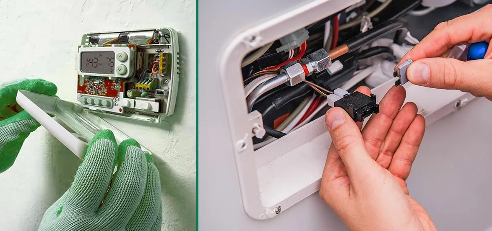

How To Fix A Broken Thermostat And The Warning Signs

A broken thermostat creates many issues in your room heating system. Find out how you can find and fix thermostat issues.
Do you feel the central heating system you have installed in your home does not perform well in winter? You might be blaming the brand or the quality and durability of the central heating and room heating system, but heating issues might be due to a minor thermostat-related problem.
In this blog, we will try to find out the right answers to these questions: “how to check if room thermostat is faulty?” “how to fix a thermostat on the?” and “how to fix an old thermostat?
What Is The Importance Of A Well-Functioning Thermostat?
Having a well-functioning AC thermostat installation in San Diego done at your home offers many benefits. It plays a significant role in the comfort of your home, but the problematic condition begins when the system's performance goes down. Minor issues in the thermostat can turn into more significant issues and ultimately harm the entire room heating system.
Any slight change can impact the heating and cooling system of your home. Find out how to check if a room thermostat is faulty.
You may have faced some dramatic situations due to issues with thermostats, such as smoke alarms getting activated and sparkling sounds. Sometimes, the malfunctions in the central heating thermostat are not so visible but subtle and sudden! Learning the signs of thermostat failure in the central heating system and how to fix them help you to deal with this condition instantly.
It is best to call licensed, certified HVAC technicians if you are wondering “how to tell if your central heating thermostat is broken.”
Warning Signs Of A Broken Thermostat
Zero Power Thermostats
The screen usually displays the temperature and the programmed schedules. If you notice the screen is dark, the batteries might be dead, or the system's thermostat is broken. In addition, if there is no change in the temperature, even if you have adjusted or the display is unresponsive, it means a thermostat malfunction must be addressed.
Central Heating System Won't Turn On
The thermostat is the central controlling system of the room heating equipment. It is responsible for balancing the temperature of the space. A malfunction in the thermostat can create difficulties in turning on the heat pump and furnace.
The thermostat might have reached the end of its lifespan. In most cases, there is an issue with wiring because the electrical wires are responsible for sending a transmission. But when the wires are damaged, the thermostat is cut off.
Central Heating System Won't Turn Off
In some cases, the situation is just the opposite. In these cases, a faulty thermostat makes your central heating run non-stop. If you feel that the system is running over time without any break, try to switch the on and off buttons of the thermostat. In these cases, you must check the wiring system of the central heating tool. To prevent such type of unexpected malfunction, you must check and replace the thermostat as and when required.
Unable To Balance Temperature
When the thermostat malfunctions, it won't work properly. It starts displaying the wrong temperature of your space on its display. So, if you feel your room is hotter than its displayed temperature, there might be issues with the thermostat.
The Thermostat Is Not Responding
Have you ever gone through the dramatic difference between the thermostat reading and the environment? The central heating systems are installed to provide comfort and efficiency, but what if it started making differences in the temperature? So, you should remember that the thermostat may be the culprit if the airflow is not balanced depending on the room temperature. When you set the thermostat temperature, it responds immediately and displays on the display section. You can also check by taking your hand on a vent to feel whether it is too hot. If you don't feel anything for more than a second, you must replace the thermostat.
Short Cycling
During the short cycling process, your central heating system will power on and off quickly without any notification. Before completing an entire cycle of heating and cooling, it automatically turns off. In this condition, your central heating system cannot reach your expectations by balancing the indoor temperature of your space. The first thing you should check during this situation is the air filter. If the air filter is blocked by dirt and debris, it causes short cycling. Therefore it is necessary to schedule the maintenance of the central heating system. In addition, if the air filter is in good condition, it might cause inaccurate temperature readings. So, if you don't want to feel that inconvenience, it's time to ask the experts of EZ Heat and Air.
The Imperfect Programmed Settings
The thermostat in the central heating system is designed in such a way that it can remember the setting and schedules for a more extended period. The central heating system’s thermostat is programmable and can't be changed until you take action. A broken thermostat will not be able to work as programmed.
Steps For Thermostat Troubleshooting
Take A Look At The Screen
Initially, you should check the thermostat's screen and make sure the thermostat should be turned on! Zero indications on the screen mean failure thermostat.
Change The Batteries
Most advanced thermostats rely on the battery. So, check whether the battery has power or not. If the screen is blank, change the battery and then recheck whether the problem has been resolved or not. But what after this, the system is not resolved?
Check The Settings
In the next step, check the temperature setting. The settings in temperature occur due to the batteries or thermostat malfunction. During this, make sure the settings are done in the right way. The temperature settings should be done according to the temperature.
Check Circuit Breakers
When you hire experts to check whether the thermostat is broken or not, they will check the circuit breakers. Make sure the circuit breakers are not tripped. If it is tripped, reset it and test the HVAC system and the thermostat again.
Check Thermostat Location
The thermostat's location can also be an issue. If you feel the function of the thermostat is getting changed day by day, then it means you should take proper action as soon as possible. The larger holes behind the thermostat can cause inaccurate temperature readings. Therefore, ask the expert repairers to ensure the thermostat is positioned correctly. You can understand how easy it is to install a thermostat with them.
Why Should I Hire EZ Heat And Air?
The HVAC thermostat plays an indispensable role in giving comfort to your space. If the thermostat of the HVAC system is damaged or broken and you are going through a bunch of problems, it is time to connect with experts whom you can trust.
A broken thermostat in the HVAC system means an unreliable airflow system that ultimately leads to skyrocketing energy bills. So, what are you looking for? Take proper action to restore the comfort and efficiency of your home. If you cannot handle the situation, hiring someone with extensive knowledge in this field would be great.
If you are seeking expert guidance, connect with an EZ Heat and Air technician. They will conduct a free consultation and let you know if there are any problems with your thermostat. EZ Heat and Air offers affordable services for thermostat repair and replacements. The experts also excel at smart thermostat installation.
EZ Heat and Air offer top-notch heating and cooling system repair, installation, and maintenance services. The company offers the services like repair, replacement, and regular maintenance. The expert team knows how to replace a thermostat with a smart thermostat, and they have the right industry knowledge, which makes the work easy and smooth.
Are you frustrated by the broken thermostat and inefficient airflow? If you want to optimize the indoor air quality of your home, then it's high time to take some action with the help of experts. EZ Heat and Air offer a reasonable price for a complete heating system inspection and repair.